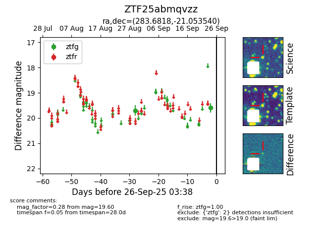

FINK: ZTF25abmqvzz
Lasair: ZTF25abmqvzz
ALeRCE: ZTF25abmqvzz
ZTF25abmqvzz (ztf,fink)
equatorial (ra, dec) = (283.6818,-21.05354)
galactic (l, b) = (14.3555,-10.12101)

last ztfg=19.60
2 ztfg detections